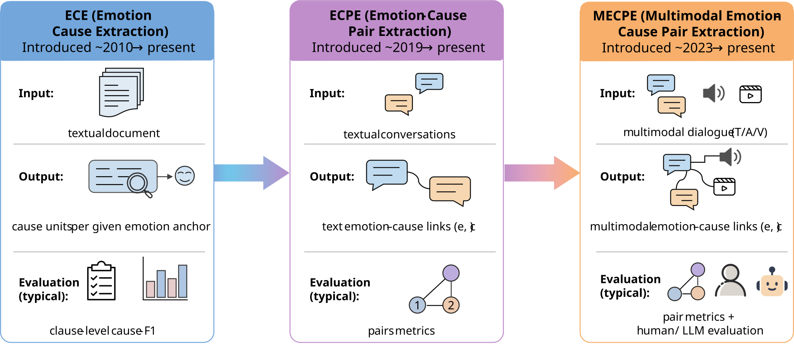

- Mostly text-only rather than systematic multimodal dialogue treatment.
- Pair extraction is treated as the endpoint instead of the anchor for explanation.
- No explicit evaluation bridge from free-text outputs back to evidence objects.
- Generation is discussed as a capability, but verification is under-specified.
Field map and framing paper
Survey
The survey page turns one of the strongest broader assets in the PaceVer workspace into a public-facing entry point: from pair extraction to grounded, verifiable explanations in multimodal conversations.
This page is useful because it does not only summarize prior work. It explains why BridgeProt is necessary, where current datasets permit real auditing, and how extraction and generation should be compared without collapsing them into one blurry metric story.
Evidence grounding
Capability matrix
Pair taxonomy
Bridgeability map
Why this survey
The gap is not “more papers.” The gap is evaluation logic.
Existing emotion-cause surveys are useful, but they largely stop at textual extraction, treat pair prediction as the endpoint, or mention multimodality only as a trend. This survey argues that the missing unit of analysis is the output interface itself.
- A unifying evidence-grounding view across extraction and explanation.
- A capability-first benchmark matrix.
- A mechanism-centered taxonomy for pair extraction.
- A bridgeability-first map for generated rationales.
- A Bridging Protocol for reproducible cross-interface comparison.
Research Questions
Five RQs structure the manuscript
Unifying links and explanations
What makes both pair outputs and explanations part of one evidence-grounding problem?
Auditable resources
Which datasets actually expose evidence units that can support verification?
Pair-extraction paradigms
How do current methods represent multimodal evidence and where do their failures arise?
Bridgeable rationales
Which generation designs emit explicit evidence pointers rather than only fluent text?
Reproducible evaluation
How should systems be compared across output interfaces without metric drift?
Bridge the field map to PaceVer
The survey is not separate from PaceVer. It provides the public conceptual justification for BridgeProt.
Roadmap figures
The survey already has strong visual structure


Methodology snapshot
Systematic rather than impressionistic
The manuscript follows a PRISMA-style review pipeline and currently targets literature from January 2023 to January 2026 across major NLP, multimodal learning, and HCI sources.
- Targets emotion causality, conversations, and multimodality jointly.
- Separates conversational MEC benchmarks from auxiliary emotion explanation resources.
- Codes papers for task, output interface, evaluation style, and limitations.

Capability-first resources
Datasets should be grouped by what they let you verify
The manuscript treats a benchmark as more than a dataset name. The task schema, protocol, and evaluation script jointly determine what claims can be audited.
Selected benchmark capability matrix
Web summary adapted from the survey manuscript rather than the full paper table.
| Dataset | Modality | Pair | Explanation | Target BL | Role | Link |
|---|---|---|---|---|---|---|
| ECF 1.0 | T / A / V | Yes | No | BL-2 | Pair extraction benchmark | GitHub |
| ECF 2.0 | T / A / V | Yes | No | BL-2 | Pair extraction benchmark | GitHub |
| ConvECPE | T / A / V | Yes | No | BL-2 | Pair extraction benchmark | GitHub |
| MEC4 | T / A / V | Yes | No | BL-2 | Pair extraction benchmark | GitHub |
| MECAD | T / A / V | Yes | No | BL-2 | Pair extraction benchmark | GitHub |
| ECGF | T / A / V | Yes | Yes | BL-1 | Conversational explanation benchmark | HF |
| ECEM | T / V | No | Yes | BL-0 | Pointer-free generation benchmark | GitHub |
| AMT / DEEMO-MER | Mixed | Partial | Yes | BL-0 or BL-1 | Auxiliary explanation resources | EmoVerse |
The survey separates conversational MEC resources from auxiliary MER/caption datasets so that “emotion explanation” does not get conflated with “emotion causality in conversation.”
Resource links
Dataset and project links should stay visible
The survey page should not paraphrase resources without preserving the outgoing links. This index keeps the most useful benchmark and project URLs directly on the page.
Pair extraction taxonomy
Mechanisms matter because failure modes follow the interface

- How the model defines the alignment object.
- Where multimodal information enters the decision path.
- Which failure modes dominate under long context, speaker interaction, or noise.
- Why paradigm shifts often trade one bottleneck for another.
Generation interfaces
Fluent text is not the same thing as auditable text
The survey groups generated rationales by bridgeability level. The key distinction is not whether the language sounds good, but whether evidence pointers can be recovered and checked.

- BL-0: pointer-free free text, readable but hard to audit.
- BL-1: evidence-aware text with explicit pointers, bridgeable.
- BL-2: alignment-object-native outputs such as pair sets or spans.
Why this matters for PaceVer
The survey is the conceptual front-end of BridgeProt
It explains the evaluation fracture
Pair extraction and explanation/generation are often reported under incompatible evaluation regimes. The survey makes that fracture explicit.
It justifies the bridge layer
BridgeProt becomes much easier to understand once the survey shows that the field lacks a stable parse-back-compatible interface between pairs and explanations.